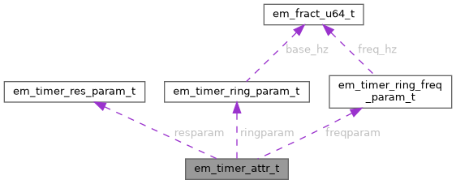

|
EM-ODP 4.4.0
Event Machine on ODP
|
|
EM-ODP 4.4.0
Event Machine on ODP
|
#include <event_machine_timer.h>

Data Fields | |
| em_timer_res_param_t | resparam |
| uint32_t | num_tmo |
| em_timer_flag_t | flags |
| char | name [EM_TIMER_NAME_LEN] |
| uint16_t | priority |
| em_timer_ring_param_t | ringparam |
| em_timer_ring_freq_param_t | freqparam |
| uint32_t | max_pending_events |
| uint32_t | __internal_check |
EM timer attributes.
The type is used when creating a timer or inquiring its configuration later.
This needs to be initialized with em_timer_attr_init(), which fills default values to each field. After that the values can be modified as needed. Values set are considered a requirement, e.g. setting 'resparam.res_ns' to 1000(ns) requires the timer to have at least 1us resolution. The timer creation will fail if the implementation cannot support such a resolution (e.g. if it only goes down to 1500ns). The implementation is free to provide better than requested, but not worse.
To know the implementation specific limits, use em_timer_capability() and em_timer_res_capability().
When creating the alternative periodic ring timer, this type needs to be initialized with em_timer_ring_attr_init() instead. EM_TIMER_FLAG_RING will be set by em_timer_ring_attr_init() so it does not need to be manually set.
Definition at line 364 of file api/event_machine_timer.h.
| uint32_t em_timer_attr_t::__internal_check |
Internal check - don't touch!
EM will verify that em_timer_attr_init() has been called before creating a timer
Definition at line 429 of file api/event_machine_timer.h.
| em_timer_flag_t em_timer_attr_t::flags |
Extra flags. A set flag is a requirement
Definition at line 376 of file api/event_machine_timer.h.
| em_timer_ring_freq_param_t em_timer_attr_t::freqparam |
Parameters specifically for em_timer_ring_freq_create(). Used when creating an alternative periodic ring timer with frequency list. (cleared by em_timer_attr_init() since not needed in that case)
Definition at line 404 of file api/event_machine_timer.h.
| uint32_t em_timer_attr_t::max_pending_events |
Maximum pending events for ring timer flow control.
Only used for ring timers. Default value 0 means no flow control is used. Valid values for the max_pending_events can be asked with em_timer_capability() and are from 'em_timer_capability_t::ring.min_pending_events' to 'em_timer_capability_t::ring.max_pending_events'. 'em_timer_capability_t::ring.max_pending_events' == 0 means that flow control is not supported and this field must be left at 0. With flow control, the implementation will ensure that at most this many timeout events are pending in the target queue at any time. Without flow control, there is no limit to the number of pending timeouts. If flow control is requested but not supported, or requested values are out of range, an error is returned in the timer creation.
Definition at line 422 of file api/event_machine_timer.h.
| char em_timer_attr_t::name[EM_TIMER_NAME_LEN] |
Optional name for this timer
Definition at line 378 of file api/event_machine_timer.h.
| uint32_t em_timer_attr_t::num_tmo |
Maximum simultaneous timeouts
Definition at line 374 of file api/event_machine_timer.h.
| uint16_t em_timer_attr_t::priority |
Timer priority.
Timeouts from a higher priority timer are served with priority over timeouts from a lower priority timer. The prioritization algorithm is implementation specific. Lower priority timeouts may get delayed due to higher priority timeout processing. Valid values range from zero to 'em_timer_capability_t::max_priority' (or 'em_timer_capability_t::ring.max_priority' for ring timers). The default value is zero (lowest priority).
Definition at line 391 of file api/event_machine_timer.h.
| em_timer_res_param_t em_timer_attr_t::resparam |
Resolution parameters for em_timer_create(). Used when creating normal one shot or periodic timers, but not when creating periodic ring timers (see ringparam below instead). (cleared by em_timer_ring_attr_init() when using a ring timer)
Definition at line 371 of file api/event_machine_timer.h.
| em_timer_ring_param_t em_timer_attr_t::ringparam |
Parameters specifically for em_timer_ring_create(). Used when creating an alternative periodic ring timer. (cleared by em_timer_attr_init() since not needed in that case)
Definition at line 397 of file api/event_machine_timer.h.